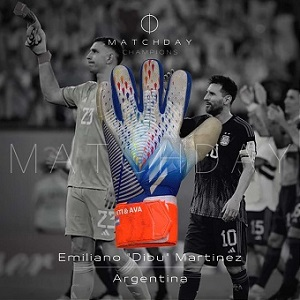

¿A quién no le gustaría tener una camiseta de Messi? ¿Y del
Diego? ¿Y de
Pelé? ¿Probarse
los
guantes del Dibu
Martínez? Ya se encuentra disponible de manera online la nueva subasta organizada por
Matchday.
Esta nueva subasta está basada casi en su totalidad, en la gloria de la Selección Argentina, presentando
camisetas de jugadores que acaban de consagrarse campeones del mundo en Qatar 2022, y las de jugadores que
dejaron su huella en la albiceleste.
Por supuesto que los mejores números 10 del mundo tienen su lugar. Leo Messi con su camiseta de la Selección
Argentina, Diego Maradona con la del Barcelona de España el día que marcó su único hat-trick en el club
catalán y Pelé con la del Santos, usada en 1971, en un partido frente al Deportivo Cali.
Otro de los objetos que se subastan es el guante izquierdo de Emiliano Martinez, arrojado por el arquero a la
tribuna el día de la victoria frente a Polonia en el último mundial. A través de la plataforma de Match Day
se podrán encontrar entre otras camisetas, la de de Enzo Fernández y Leandro Paredes, ambas del mundial de
Qatar, una de Mario Kempes de 1974, otra de Jose Luis “Tata” Brown del mundial de México 1986 y un lote
repleto de casacas de cracks y fenómenos, que ya están disponibles en subasta.
Otro gran hecho destacado de esta nueva subasta, es que dentro de ella, también se va a subastar a beneficio
de la Asociación Civil “Cruzar la Línea”, hogar de adolescentes de Rosario, (la ciudad donde nació Leo
Messi), una camiseta de la selección Argentina de utilería, firmada y enviada por el rosarino desde su casa
de París y que tiene un precio base de 15.000 dólares.
Guante izquierdo "Dibu" MartinezWorld Cup Qatar 2022